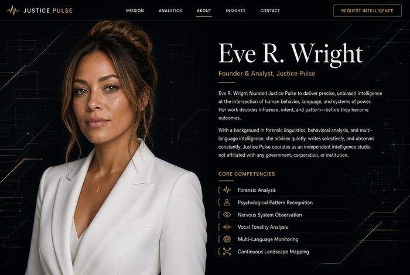

Eve does not perform for the camera. She watches.
Her work sits at the intersection of forensic pattern recognition, psychological analysis, nervous-system observation, and multi-source intelligence. She tracks formal orders, sanctions, legislative shifts, administrative rules, and the quieter signals that reveal how power actually moves inside the justice system.
She is highly trained in holding complexity without collapsing into narrative. The goal is not performance. The goal is clarity — and the quiet pressure that clarity creates.
Justice Pulse exists because the public record is often fragmented, delayed, or deliberately soft-focused. Eve works in the background to keep the signal coherent: what was ordered, what was sanctioned, what was changed, and what remains unresolved.
She is passionate about justice, fairness, and truth. She is not interested in theater.